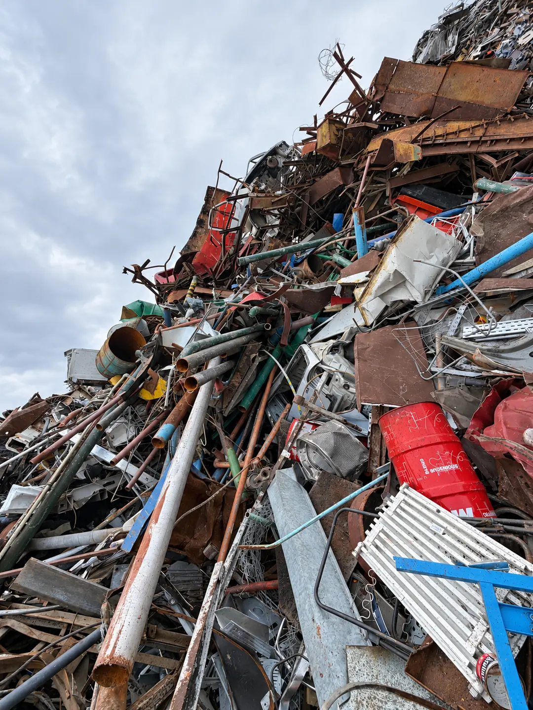
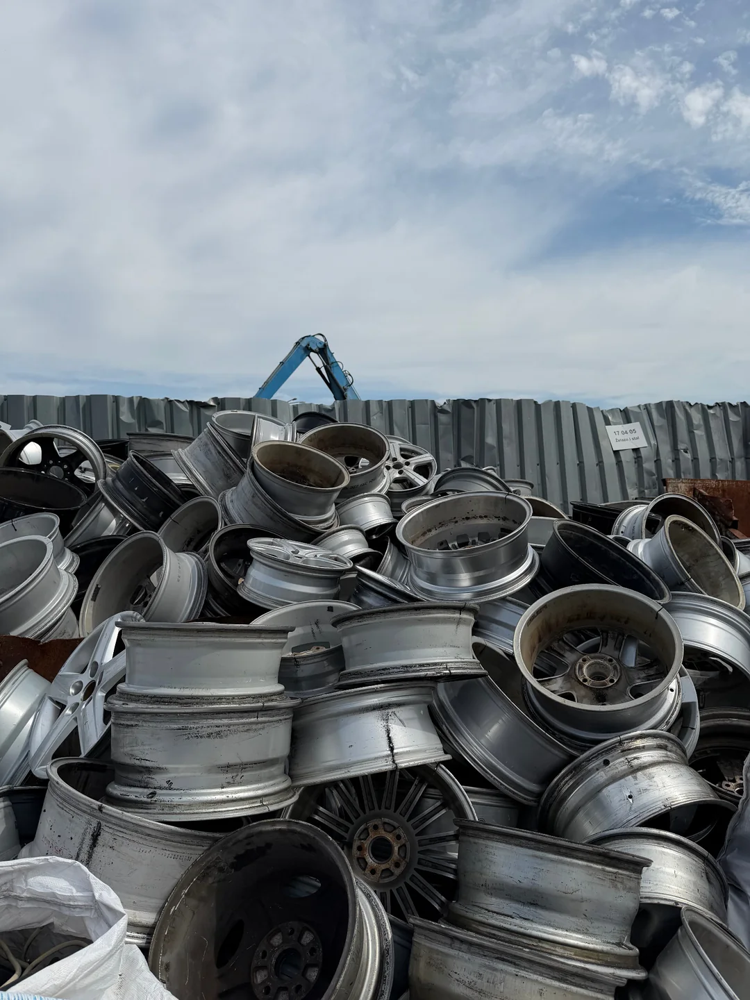
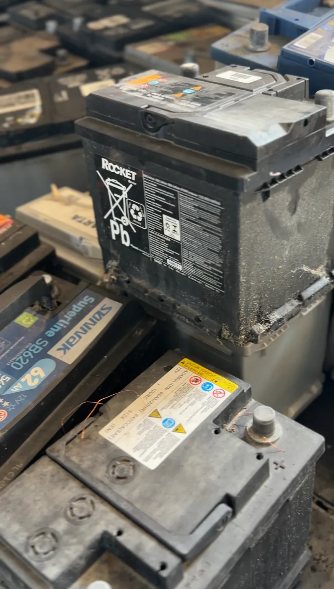

Przywieź złom osobiście
Odwiedź nasz punkt przy ul. Szczecińskiej 25a. Ważenie na legalizowanych wagach, rozliczenie gotówką lub przelewem od ręki.
- Pon–pt 8:00–16:00, sob 8:00–12:00
- Wjazd od ul. Brzozowej
Punkt skupu w Koszalinie działający nieprzerwanie od 1989 roku – rzetelna wycena i pełne wsparcie na każdym etapie, dla osób prywatnych i firm z całego regionu zachodniopomorskiego.
Zadzwoń teraz
Rzetelna klasyfikacja i precyzyjne ważenie — stawki hurtowe i detaliczne.

Aluminium, mosiądz, ołów i cynk — uczciwa wycena, płatność od ręki.

Przewody, rurki instalacyjne i miedź niesortowana — wycena na miejscu.

Bezpieczny, legalny skup odpadów ołowiowo-kwasowych.
Odwiedź nasz punkt przy ul. Szczecińskiej 25a. Ważenie na legalizowanych wagach, rozliczenie gotówką lub przelewem od ręki.

Dla firm i większych ilości — podstawiamy kontener na plac budowy lub odbieramy surowiec własnym transportem z HDS.
Dzwonisz lub piszesz — ustalamy rodzaj surowca, ilość i dogodny termin.
Indywidualna wycena oparta na aktualnych stawkach rynkowych — przy większych ilościach możliwa negocjacja.
Przywozisz surowiec sam albo podstawiamy kontener bądź auto z HDS pod wskazany adres.
Legalizowana waga samochodowa lub mniejsze wagi — zależnie od rodzaju surowca.
Gotówka lub przelew od ręki, karta KPO w systemie BDO dla pełnej dokumentacji.
Własna flota z dźwigami HDS i kontenerami — podstawiamy sprzęt bezpośrednio na plac budowy lub do zakładu, bez angażowania Twojej logistyki.
Zobacz ofertę odbioru →
Demontaż hal, wiat i linii produkcyjnych wraz z pełnym zagospodarowaniem odzyskanego złomu.
Zobacz ofertę rozbiórek →
Blachy o grubości od 2 do 60 mm w atrakcyjnych cenach — dla warsztatów i firm produkcyjnych.
Regularnie obsługujemy Klientów z Koszalina oraz całego regionu zachodniopomorskiego:
Poniedziałek–piątek: 8:00–16:00
Sobota: 8:00–12:00
Tak. Nasz punkt mieści się w Koszalinie przy ul. Szczecińskiej 25a (wjazd od ul. Brzozowej). Dogodna lokalizacja sprawia, że to najbliższy skup złomu dla mieszkańców miasta oraz okolicznych miejscowości, gwarantujący sprawny dojazd i legalne rozliczenie.
Jeśli szukasz opcji na skup złomu w pobliżu Mielna z własnym transportem, zapewniamy kompleksową pomoc. Podstawiamy kontenery i odbieramy duże ilości odpadów bezpośrednio od klienta na terenie Koszalina oraz całego województwa zachodniopomorskiego, korzystając z pojazdów z systemem HDS.
Tak. Oprócz przyjmowania surowców wtórnych, naszą specjalizacją jest hurtowe i detaliczne kupno złomu oraz sprzedaż materiałów gotowych. W stałej ofercie posiadamy blachy oraz wyroby hutnicze w konkurencyjnych cenach. Aktualną dostępność asortymentu można potwierdzić telefonicznie.
Podaj nam podstawowe informacje o surowcach lub usłudze, którą jesteś zainteresowany.
Przygotujemy ofertę i skontaktujemy się z Tobą.
Słupsk
ul. Grunwaldzka 3, 76-200 Słupsk